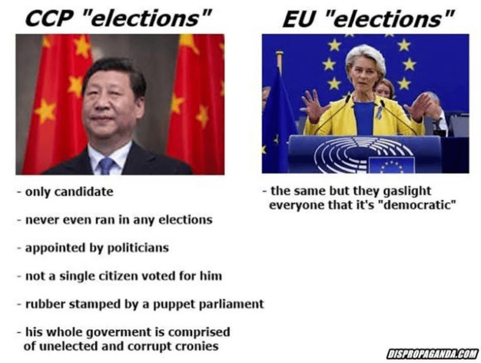

Thoughts On Democracy
Table of Contents
- 1. Why do we have democracy?
- 2. Democracy As A Tragedies Of The Commons
- 3. Democracy Within Private Entities
- 4. Meritocracy Combined With Sortition
- 5. Critique Of The Electoral Process
- 6. Why Parliamentary Democracies Tend To Be Better Than Presidential Democracies
- 7. Why Replacing FPTP Will Not Improve Democracy
- 8. List Of Possible Changes To Democracies That Actually Wouldn’t Improve The Democracies
- 9. Other Reasonable Reforms That Could Improve Democracies
- 10. Reason Systems As A Possible Alternative To Democracy
- 11. Reason Systems (Modern Improved Court Systems) Are Better Than Democracies
- 12. Conclusion
Note: I haven’t finished writing this file yet.
1. Why do we have democracy?
How to govern society is one of the oldest philosophical problems, and while they’re aren’t any ideal solutions that can completely eliminate corruption, there are some pragmatic principles and and heuristics that we can follow to generate a better society.
All political systems are oligarchies, regardless of how they present themselves. It’s not possible for a single person to rule an entire country all by themselves because they need subordinates who will enforce their rule of law, and it’s equally impossible for a democracy to work effectively unless it is a representatives and a hierarchy of other government officials.
[I still need to finish this section.]
{kind=link}
2. Democracy As A Tragedies Of The Commons
i
2.1. What Most People Really Mean When They Say “Go Vote”
When people tell others to “go vote”, they often don’t really mean “go vote”. What they’re really saying is “go vote for my guy”. For example, young people tend to vote Democrat, so Democrats will send out hordes of people to college campuses to sign people up, drive them to polls, etc, while Republicans will try to keep college students from voting by making it arbitrarily difficult. Likewise, “Pro-voting” organizations typically target young people and POC, but you’ll never see them visiting rural America or manufacturing and construction sites to get those demographics to vote, and it’s not hard to figure out why. None of it is driven by genuine pro or anti voting sentiment. It’s all just gamesmanship.
3. Democracy Within Private Entities
Reason is superior to democracy since it is the best decision maker. Decisions should made with reason instead of democracy whenever possible.
In situations where there is no single right answer and/or there are different competing values and value systems, democracies are often proposed as a potential solution.
I used to be vehemently against democracy when I used to be an Ancap. I was parroting the Rhetoric of Exploitation used by other Ancaps to portray Democracy as an oppressive system that is used by the government to create the illusion that the society is fair, just, and ruled by the people.
After I accepted that morality was subjective, I became less opposed to democracy since I now understood it to be a solution to resolving multiple different values, perspectives, and ideologies, as imperfect as it may be.
Nevertheless, I agree with all the criticisms in this blog post The Myth of Democracy, and I still think that we can make a better system than anything that’s ever been tried before.
Approval Voting: For every choice/option/candidate, everybody votes yes or no to signal whether or not they approve of the option. The option(s) with the most approvals is/are selected. People can vote multiple times, vote once, or not vote at all. This method is quick, simple, will work for most situations, and is better than first past the post voting. CGP Grey has a video explaining how Approval Voting works.
Single Transferable Voting: The single transferable vote (STV) is a voting system designed to achieve proportional representation through ranked voting in multi-seat organizations. Under STV, an elector (voter) has a single vote that is initially allocated to their most preferred candidate. Votes are totaled and a quota (the number of votes required to win a seat) derived. If their candidate achieves quota, he/she is elected and in some STV systems any surplus vote is transferred to other candidates in proportion to the voters’ stated preferences. If more candidates than seats remain, the bottom candidate is eliminated with his/her votes being transferred to other candidates as determined by the voters’ stated preferences. These elections and eliminations, and vote transfers if applicable, continue until there are only as many candidates as there are unfilled seats.
4. Meritocracy Combined With Sortition
Most importantly, the oligarchical structure of a society should be meritocratic.
Wikipedia: Wisdom of the Crowd
Shower Thought: The court system uses sortition for reaching verdicts in the form of randomly selected juries, yet sortition is not used for determining the laws as well.
5. Critique Of The Electoral Process
{kind=link}
6. Why Parliamentary Democracies Tend To Be Better Than Presidential Democracies
NOTE: Although parliamentary democracies tend to be better than presidential democracies, the presidential democratic system in the United States worked just fine until Jimmy Carter’s presidency during the late 1970s.
It probably wouldn’t have made much difference if the United States had a parliament, until Carter’s presidency, where at that point, the US would definitely be better off if it was using a parliamentary system instead. Because then Jimmy Carter could’ve been voted out of office by the Parliament.
Up until that point, presidential democracies were about as good as parliamentary ones. The reason why that changed was when:
- The country elected a weak head of government who couldn’t leave office until his term was over,
- This was long before the Internet started, which caused democratic backsliding by isolating people into political ideologies in their own online Internet bubbles and echo chambers, and thus making the presidential system less stable since more attention started being focused on the President and viewing the Presidency as the key to fixing all the countries problems, and
- Power started shifting towards the Presidency, in large part because the Presidency and its executive orders have become the only fast and effective way to change the federal law of the land due to the democratic backsliding and inability of political cliques to compromise with each other and see the other’s sides arguments instead of constructing strawmen.
Although I haven’t read the book itself, I agree with pretty much all the arguments against Presidential Democracies that are stated in this Wikipedia summary of the book: Bad for Democracy: How the Presidency Undermines the Power of the People by Dana D. Nelson.
7. Why Replacing FPTP Will Not Improve Democracy
Critics of First-Past-The-Post will argue that it’s unfair because they perceive it to be a winner-takes-all system that denies minority parties from having any real power in the government. The People who hate FPTP the most are the ones who are tired of always siding with one side or the other.
Theoretically, proportional representation or ranked voting would be more democratic because it would be more reflective of the will of the people, right? It wouldn’t actually. And even if the elected government was more representative than it would be otherwise under FPTP, the democracy would still encounter the problems of The Deep State and Myth of Democracy. But if you’re still not convinced that the Deep State has more power in the Government than the people do, I will explain here why FPTP would not be more representative of the people.
Even if replacing FPTP with a proportional representation democracy does give those people more representation in the government, they overlook that their political opposites will also gain more representation too. This causes greater political disagreements that ultimately have to group together to form various political coalitions, which causes political gridlock that isn’t any better than the 50/50 gridlock faced in FPTP systems.
Generally speaking, when gridlock happens in one branch of government, a different branch or authority within the government that is not gridlocked can seize the opportunity to take the power for themselves, and the public will usually go along with it (e.g. the transfers of power from Congress to the Presidential and Judicial branches of the USFG).
It’s worth noting that these are potential disadvantages and that it depends on the specific implementation of PR system. Additionally, PR systems have their own advantages such as increased representation of minority groups, parties or ideas and giving voice to citizens who might not have representation in a first-past-the-post system.
One of the reasons why the Weimar Republic failed was that it had a proportional representation democracy that caused gridlock within the legislature, thus causing political power to transfer to the executive branch in order to actually get anything done. Italy also faced similar gridlock when they switched from FPTP to a proportional representation system in 19##, and they had to rescind it in 20## since it made the government more unstable. When New Zealand switched to a proportional representation democracy, there was no majority in the parliament from 1996 to 2017.
FPTP was more stable before the rise of the Internet caused echo-chambers, social bubbles, and a massive increase in divisiveness and partisanship in the public.
Proportional representation already exists in FPTP, but in a different way. Instead of having proportional representation inside the government’s legislature as a whole, political factions have proportional representation inside the main political parties. For example, the Republican Party in the United States consists of factions as the Pro-Trumpers, the Freedom Caucus (Libertarian-leaning), __ etc. The Democratic Party of the United States consists of Democratic Socialists, moderate Blue Dog Democrats, __ etc.
So FPTP doesn’t really reduce the range of acceptable political thought within the status quo after all.
Once the coalitions form inside the political parties, they then elect their leaders and choose their direction according to their constituent percentages. Once there are exactly two solid factions competing against one another (Democrats vs Republicans), the result is less political gridlock… except for when the Legislature and Presidency are not decisively controlled by the same party.
When I was Libertarian, I used to believe that the United States would be better off it would eliminate FPTP since that would enable Libertarians to gain greater representation in the Government, but until I realized that opposing ideologies like the Social Democrats, the Green Party, the Neoliberals, the Pro-Trumpers, the Religious Right, etc would also gain greater representation, I realized that this would be a loss cause. The result would be political gridlock, and it wouldn’t be any different than how the Libertarians already have their own small faction inside the Republican Party.
8. List Of Possible Changes To Democracies That Actually Wouldn’t Improve The Democracies

- Replace the first-past-the-post system with single transferable voting,
- Replace the two-party system with a multi-party system,
- Have an exceptionally high voter turnout rate,
Another thing that’s worth pointing out is how Japan happens to be a democratic one-party state. Maybe Japan could switch to a non-FPTP system, but would it really make a difference if the country’s genetics and social culture predispose it towards a conservative one-party state?
9. Other Reasonable Reforms That Could Improve Democracies
Consider a list of ideas that could potentially improve how our democracies function:
- Implement voter-ID laws with government-issued ID cards (free for all citizens),
- Have more educated voters (see: Why It’s So Difficult To Change People’s Minds),
- Restructure the government in such a way that discourages corruption and corporatacracy,
- Completely eliminate gerrymandering: Remove party affiliations at the time of voter registration. Do not track home addresses on ballots. Voter ID is done through government-issued ID cards, but does not require you to retain the information together. Now politicians don’t know where you live and can’t draw districts with biases,
- Replace the electoral college with the popular vote,
- Lower the minimum voting age to 16 years old?,
- Implement consecutive and/or lifetime term-limits for all political offices,
- Pass laws regulating campaign finance,
- Localism
- Perhaps the retirement age should also be the politician cut-off age? This could prevent the likelihood that people with dementia (e.g. Joe Biden) or people with perverse incentives get elected.
- Et Cetera


10. Reason Systems As A Possible Alternative To Democracy
Ever since I became disillusioned about democracy during my Ancap years, I thought it was really peculiar how the legislative and jury processes are so radically different from each other.
In a democracy, decisions are allowed to be based on partisanship, emotions, conflicts of interest, and personal morals; and that’s even strongly encouraged. The selection process for the people who make legislative decisions regarding society is also determined by election campaigns and voting.
On the other hand, the decision-making process in the court system is completely different. People are forbidden to be selected to make the decisions if they will have a conflict of interest in deciding the verdict, or if they are likely to be influenced by their morals, emotions, and personal biases. In addition, the selection process for the people who make decisions is also determined by random selection (sortition), in contrast to the voting system used by democracies.
It bugs me that most people never question why these decision making processes are so different from each other. Yes, they belong to different branches of government, but they are both making important decisions about society.
Besides the appeal that a random selection of people on the jury can seem more fair and unbiased, I can’t think of many other reasons why the decision-making processes for the legislature and court system should be much different from each other.
10.1. Rules For Reason Systems
For now, this concept will be called a “reason system” since ’logocracy’ is apparently already taken to mean ’rule of words’, and there aren’t any known Latin or Greek roots that could be agglutinated to form a better word.
- There is a public debate with widespread attention and such, and it forms the rules for a society.
- If there are any significant escalating disagreements, then an authority can schedule a textual debate.
- Debates are textual for the reasons outlined in a separate file (currently a section of Philosophy Of Best Formats For Media).
- Before the content debate, both sides may agree to debate what the best values are to avoid them later on.
- Fallacies are pointed out accordingly during the debate session. Making insults disqualifies those who make the insults.
- If both sides are using sound logic, the moderators may schedule a side debate about what the best values are.
- There is a similar structure to how jury systems work today. The best participants are selected for people with no pre-existing biases. And they are encouraged to evaluate all the evidence, and use reason to reach the correct conclusions. Every opposing viewpoint is heard before a decision is made, and etc.
- If someone has a point to make among a vast crowd of people, how is it decided when they will speak?
- Maybe there could be an electronic board that logs current debating topics and issues, and the points that each side must address and counter because those points were made against them.
- If there is only one value that every side should agree to in a political reason system, it ought to be that self-ownership and all its corollaries can never be violated under any circumstances.
10.2. Reaching Compromises
The other main reason why democracy is so prevalent in western societies today is that it is a way to make a compromise between opposing political ideologies, platforms, and ethics.
- Hence this is really the only reason why democrats would eventually let Donald Trump be the president of the US, or why republicans would let Barack Obama be the president of the US, or why any political faction would allow laws, legislation, politicians, etc. that they really detest to be in power.
- Private entities could probably use democracies as a means of compromise under limited circumstances.
So how would a private entity or an anarchist society make compromises if they aren’t using democracies?
- Is there any commonly-accepted term to describe a society or entity that makes decisions based on who wins a scheduled debate?
- In an ancap world, economic power is democratic in the sense that everybody choose who will provide their protection (they vote on who will protect them). Instead of compromises, everybody lives under their chosen defense agency, and the defense agencies might compromise their policies economically.
- The answer is that they don’t. There is only one right answer on how to do things, so any time there is a compromise made between two opposing sides, it is either:
- A compromise between the right answer and the wrong answer.
- Or even worse, a compromise between multiple wrong answers, because there’s more ways to be wrong than there are to be right.
- Thus, there is no need to make compromises in a rational society. Only the right answer should be enacted. And the right answer will be determined by a reason system.
10.3. Important Question: Who determines / How is the winner of a debate determined?
- Is it determined when one side is unable to make any further points that haven’t already been made and simultaneously unable to counter any points made against them?
- Hypothetically speaking, a reason system could be vulnerable if all participants share identical cognitive biases and nobody ever thinks to propose something counter-intuitive to those biases or ideas that haven’t already been proposed.
- Since reason systems have many similarities to jury systems, it is worth mentioning that jury systems decide between the defendant and the prosecutor by having the 6 or 12 person jury vote on the decision.
- Would a reason system use a similar voting system to a jury system?
- How would this problem be eliminated?
- NOTE: Most likely, the winner of a debate must be determined by a human being or a group of human beings. A computer programmed by humans or anything else without human-level reasoning would not be able to determine the winner.
- NOTE: Since we are working under the assumption that all participants have the same mission of finding the right answer even if they were initially wrong about it, the winner of a debate could be determined in scenarios where a participant admits that they were wrong and they change their decision to match that of their opponent.
- Or at the very least, the debate ends because they don’t have any points left to make.
- And if one side admits defeat, then the debate room reaches an agreement that they have lost and they re-affirms the winner to make it official.
11. Reason Systems (Modern Improved Court Systems) Are Better Than Democracies
Since juries and court systems already have wide acceptance in modern western culture, pointing this out should make my ideas less controversial to the world.
How could you possibly go wrong with a system that emphasizes reason, logic, and non-partisanship? On the other hand, you could easily imagine thousands of different ways how a system that allows emotions, partisanship, non-thorough evaluation of the evidence, and conflicts of self-interest to influence the decision making could go wrong. I don’t see how a democratic republic could possibly have any advantages over a reason system at all. Not only does democracy enable people with conflicts of interest to participate in deciding the rules of society, but it encourages it.
11.1. Improving Reason Systems
One of the most unsettling things about the reason system is that the laws would be made without your peers, and even more frighteningly, if you are innocent and put on trial, it somehow feels a bit more scary to know that you are being judged by professional judges instead of your peers.
- Why is this?
- What role should one’s peers play in judgment, if at all?
11.2. Example Conflicts Of Interest
Homeowners in big cities wanting to pass zoning laws to decrease the supply of housing and thus artificially increase the value of their property.
- The logic of pro-democracy supporters would be that homeowners should have a stake in deciding zoning laws just because they live in the city, but this is not reasonable because they have a conflict of interest.
- Even though the homeowners may in fact live in the city, it should be deemed inappropriate for them to have a stake in deciding the zoning laws of that city should be since they have a conflict of interest to increase their property values at the cost of anybody wanting affordable housing.
12. Conclusion
i